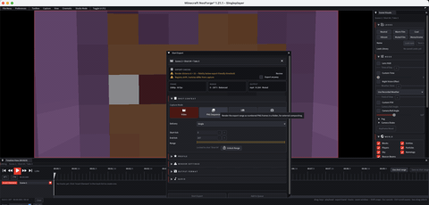

Technical wiki for creators and addon developers.
Video, GIF, PNG and vertical export
Start Export, codecs, CRF/bitrate, audio, transparency, SSAA, profiles and output.
Free downloadAll Rights ReservedNeoForge 1.21.1

01
Before exporting
- Set the timeline range.
- Check camera, actors and visuals.
- Open Start Export.
- Choose profile, resolution, FPS, container, codec and quality.
- Verify output path and filename.
- Start export and do not close the client until it finishes.
02
Formats
| Output | Best use |
|---|---|
| MP4 | Final video for YouTube, Discord, project media and archive. |
| GIF | Short demonstrations in the project page or wiki. |
| PNG sequence | External editing, compositing and frame-by-frame control. |
| Vertical | Shorts, TikTok, Reels and mobile clips. |
03
Quality
Bitrate: targets file size and bandwidth.CRF: constant quality. Lower values mean higher quality and larger files.SSAA: supersamples for cleaner edges but costs performance.Reset RNG: makes particles and randomness more predictable during export.No GUI: hides HUD and UI in the final render.
04
Transparency and audio
Transparent background requires a scene prepared for compositing and a suitable format/codec. For audio, enable record audio and choose the available codec; stereo audio preserves channels when supported.
05
Export profiles
Export profiles save reusable settings: video codec, audio codec, container, resolution, FPS and bitrate.